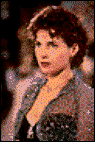

Contents | Features | Reviews | News | Archives | Store |
 |
|
| Movie Credits | Buy It! |
Sabrina
Review by Carrie Gorringe
 |
Starring Harrison Ford, |
The most spiteful act that a film critic can commit on behalf of a remake is to see the original hours before seeing the remake. Spiteful, but useful, since it throws each film into relief against the other (and not, as might be imagined, simply the latter against the former) and reveals each of their good points in addition to their warts. Billy Wilder's 1954 version stood up reasonably well to a repeat viewing, but, truth be told, the original Sabrina isn't one of Wilder's best films. The primary reason for this weakness has much to do with Wilder's love of the corruscatingly cynical, a taste he adopted while bumming around as a would-be writer in Berlin during the Weimar Republic. While vicious wit worked amazingly well in such Wilder films as A Foreign Affair (1949), Sunset Boulevard (1951), and later in Some Like It Hot (1959), its presence in Sabrina merely served to throw the narrative off center. For if Wilder was thoroughly jaundiced in his view of human nature, he, like most cynics, could be persuaded to go to a rather lachrymose extreme, such as the suicide attempt by the heroine when she first comes to realize how unrequited her love is. The scene is jarring, not only because it is unpleasant, but because this overwrought behavior seems to have been lifted from the worst aspects of late nineteenth-century melodrama. As per expectations, the glorious presence of the late Audrey Hepburn was primarily responsible for papering over any glaring inconsistencies in the narrative; if anyone had to ask why something in the film was as it was, one look at Audrey Hepburn, in all of her innately gamine elegance, clothed in the finest of Edith Head designs, was enough of an answer for even the most critical. Sadly enough, Sydney Pollack's remake, while credible, retains all of the inconsistencies of the original (the suicide scene has, mercifully, been removed), but there is no Audrey Hepburn to make them tolerable.
For those who aren't familiar with this Cinderella tale, the basic elements are these: The wealthy Larrabee family employs one Mr. Fairchild (Wood) as a chauffeur. Fairchild's daughter Sabrina (Ormond) has been infatuated with the Larrabee family black sheep, David (Kinnear), who, as the old saying goes, can't see her for dust. With a wounded heart, Sabrina goes off to Paris to work at Paris Vogue as an intern. She becomes an accomplished if unknown photographer and a stunning beauty, and comes back to woo David. Unfortunately for her plans, the Larrabee family has some of its own. David's older brother, Linus (Ford) and mother Maude (Marchand) intend for him to go though with his impending marriage to Dr. Elizabeth Tyson (Holly), whose father, Patrick (Crenna), has a business deal in the works with Larrabee Enterprises. In order to put a stop to David's infatuation, Linus, a man in desperate need of a personality implant, enacts a seemingly impossible scheme to feign personal interest in Sabrina. As expected, the lines of attraction change, but with unexpected consequences.
It's tempting to ask why, in a year that saw a spate of films with extreme violence (Heat and Seven, to name just two), one might be critical of a good old-fashioned love story that never wanted to hurt anybody. The answer lies in the fact that this remake, however good-intentioned or not, simply does not work. First, it borrows most of the dialogue almost verbatim from the original, and what efforts have been made to make it contemporary seem somewhat self-consciously forced. Moreover, the repetition of dialogue simply underscores the remake's weakness. This is especially apparent in the opening montage sequence, in which Sabrina provides a description of the Larrabee's wealth. When Hepburn's voice recounts the fact that rain wouldn't dare fall on one of the Larrabee's numerous parties, her voice is laden with the requisite irony, but it also conveys a sense of wistful pain, one well-known to the powerless outsider. Ormond rather mechanically conveys the irony, so that the audience can laugh dutifully.
The real weakness in this new and unimproved Sabrina is the lack of a strong female lead. It doesn't matter how great the other performances are -- in fact, it never did in the original. Despite Humphrey Bogart's weak performance as Linus in the original (caused, no doubt, by his loathing of Hepburn), Hepburn's skill and beauty allowed the implausible romance to make sense. Without a strong female lead, the remake simply never gels. One cannot even begin to comprehend what possessed director Pollack to think that Ormond could fill Hepburn's role, other than a vague physical and vocal resemblance. To be fair, that would have been a tall order for even the most beautiful and talented of actresses, because Pollack is asking his Sabrina not to flesh out a role, but to displace a powerfully glamorous persona. What actress alive could compete with Hepburn? Certainly not Ormond. It isn't so much that Ormond is some sort of graceless gosling with no redeeming qualities; she is an attractive woman, with what might be called a quiet grace, but her performance is inconsistent, oscillating far too abruptly between self-confidence and uncertainty. Worse, she lacks the marvelous plasticity of facial features that Hepburn could call upon to provide depths of unspeakable sorrow in a single glance. Ormond tends to convey emotion in one of two modes, the pout and the smirk, and neither, like her performance, possesses much charm. One sequence in particular underscore how apparent her miscasting is. To make matters worse, it is perhaps one of the most important in the film, the one in which Sabrina has a reunion with David, and he is immediately smitten, only to have his infatuation evolve into shock when Linus reveals her secret. Ormond allows Sabrina to become sheepish and awkward, nearly tripping over the lawn in her haste to flee. Contrast this with the same sequence in the 1954 film: Hepburn's Sabrina has a confidence that is irresistible, laughing at and savoring her moment of triumph at being allowed to be, for once in her life, and, however fleetingly, the cat set amongst the pigeons. Even when Ormond appears with Ford, no improvement in tone takes place. Ormond's love scenes with Ford are awkward instead of evocative. Ford doesn't help matters any with a screen presence that seems to have been carved from solid oak. It's as if both of them wanted to be somewhere else.
It's fortunate that many of the other performances don't matter, because many of them don't make much of a contribution. Kinnear's much-vaunted screen debut is nothing more than a stale replica of William Holden's David, cut nearly whole cloth from the original. He might bear some resemblance to Holden, but Kinnear doesn't capture the inner rage behind the grinning facade that Holden so skillfully brought to the screen and kept in precise balance through the course of Wilder's. Lauren Holly is pleasing enough, but is never on screen long enough to develop into anybody interesting. Richard Crenna's role as a stereotypically ruthless capitalist is simply that. Angie Dickinson's few minutes of screen time as Crenna's libidinous wife are utterly embarrassing; the role is so demeaning that someone should have taken up a collection to prevent her from doing this to herself. Only Nancy Marchand rises to the occasion with a most deftly-executed combination of imperviousness and wit, but even she can't keep the champagne's fizz from going flat.
The real weakness in this new and unimproved Sabrina is the lack of a strong female lead. It doesn't matter how great the other performances are -- in fact, it never did in the original. Despite Humphrey Bogart's weak performance as Linus in the original (caused, no doubt, by his loathing of Hepburn), Hepburn's skill and beauty allowed the implausible romance to make sense. Without a strong female lead, the remake simply never gels. One cannot even begin to comprehend what possessed director Pollack to think that Ormond could fill Hepburn's role, other than a vague physical and vocal resemblance. To be fair, that would have been a tall order for even the most beautiful and talented of actresses, because Pollack is asking his Sabrina not to flesh out a role, but to displace a powerfully glamourous persona. What actress alive could compete with Hepburn? Certainly not Ormond. It isn't so much that Ormond is some sort of graceless gosling with no redeeming qualities; she is an attractive woman, with what might be called a quiet grace, but her performance is inconsistent, oscillating far too abruptly between self-confidence and uncertainty. Worse, she lacks the marvellous plasticity of facial features that Hepburn could call upon to provide depths of unspeakable sorrow in a single glance. Ormond tends to convey emotion in one of two modes, the pout and the smirk, and neither, like her performance, possesses much charm. One sequence in particular underscore how apparent her miscasting is. To make matters worse, it is perhaps one of the most important in the film, the one in which Sabrina has a reunion with David, and he is immediately smitten, only to have his infatuation evolve into shock when Linus reveals her secret. Ormond allows Sabrina to become sheepish and awkward, nearly tripping over the lawn in her haste to flee. Contrast this with the same sequence in the 1954 film: Hepburn's Sabrina has a confidence that is irresistible, laughing at and savouring her moment of triumph at being allowed to be, for once in her life, and, however fleetingly, the cat set amongst the pigeons. Even when Ormond appears with Ford, no improvement in tone takes place. Ormond's love scenes with Ford are awkward instead of evocative. Ford doesn't help matters any with a screen presence that seems to have been carved from solid oak. It's as if both of them wanted to be somewhere else.
It's fortunate that many of the other performances don't matter, because many of them don't make much of a contribution. Kinnear's much-vaunted screen debut is nothing more than a stale replica of William Holden's David, cut nearly whole cloth from the original. He might bear some resemblance to Holden, but Kinnear doesn't capture the inner rage behind the grinning facade that Holden so skillfully brought to the screen and kept in precise balance through the course of Wilder's. Lauren Holly is pleasing enough, but is never on screen long enough to develop into anybody interesting. Richard Crenna's role as a stereotypically ruthless capitalist is simply that. Angie Dickinson's few minutes of screen time as Crenna's libidinous wife are utterly embarrassing; the role is so demeaning that someone should have taken up a collection to prevent her from doing this to herself. Only Nancy Marchand rises to the occasion with a most deftly-executed combination of imperiousness and wit, but even she can't keep the champagne's fizz from going flat.
Contents | Features | Reviews | Books | Archives | Store
Copyright © 1999 by Nitrate Productions, Inc. All Rights Reserved.